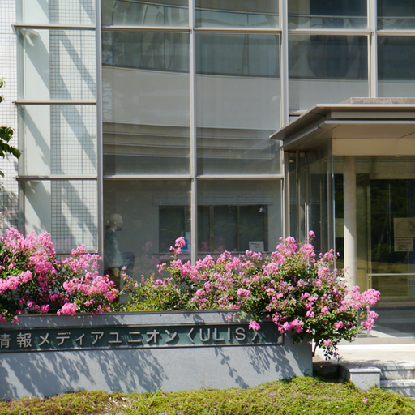
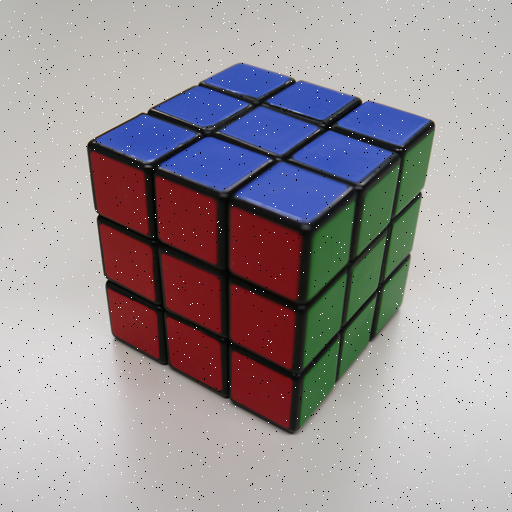
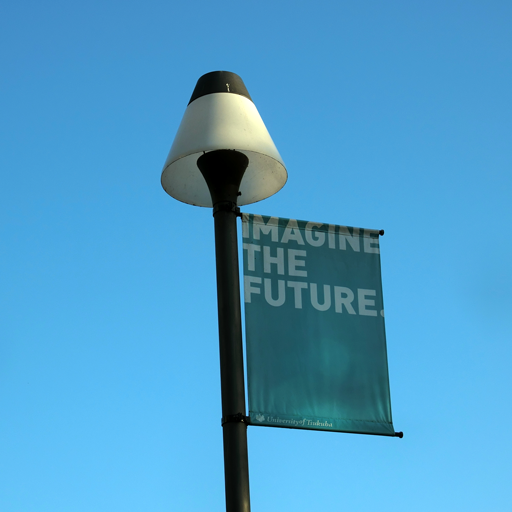
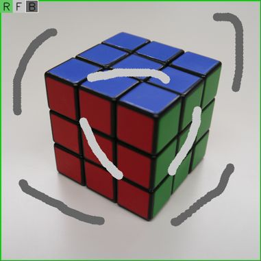

OpenCVについて
OpenCV(Open Source Computer Vision Library)は
Intel社が開発した画像に関する様々な処理を行うことができる
オープンソースのC/C++ライブラリである．画像処理に必要な数学的な処理(線形代数など)，画像・動画の読み込み/書き出し，
エッジ抽出や物体検出，物体追跡，カメラキャリブレーション，機械学習などその機能は多岐にわたる．
OpenCVはそれ単体で動くプログラムではなく，プログラム中でその機能を使うためのライブラリである．
OpenCVを使うことで複雑な画像処理プログラムをもっと簡単に書くことができるようになる．
本演習ではOpenCVの基本的な使い方を学び，講義で行った画像処理をOpenCVでプログラミングすることで，
より理解を深めることを目的とする．
環境設定とサンプルプログラムの実行
環境設定
OpenCVはオープンソース(Apache2ライセンス)のライブラリであり， Windows,Linux,Mac,Android,iOSと様々なプラットフォームに対応している． 今回の演習では，全学計算機システムのWindows環境を用いる． その他の環境で実施する場合はそれぞれ自己責任で行うこと(環境依存の問題についてのサポートは行わない)．
サンプルプログラムの実行
下記リンクからサンプルプログラムをダウンロードする．
ダウンロードしたzipファイル(cvproject.zip)を解凍し， cvproject/src/cvproject.slnを開く． 実習室PCのWindows環境に入っているVisual Studio 2022(以下VS2022)での演習方法(サンプルプログラムのビルド/実行方法)は 以下のリンク参照
他の環境での実行
実習室ではなく自身の環境で実行する場合，以下のような方法が可能．
-
Windowsならば無料版のVisual Studio(Visual Studio Community)をインストールして，上記Visual Studioを使った演習に従って実行
(参考) 無料版VisualStudioのインストール方法
サンプルプログラムのVSCommunity2022での実行はこちらで確認済み．
OpenCVはMacやLinuxなど他のプラットフォームに対応しているので， ライブラリを自分の環境に合わせてダウンロードして実行することも可能であるが， その場合は，インクルード,ライブラリの設定は自分で行うこと(こちらではサポートしないので自己責任で！)． また，OpenCVはpythonにも対応しているので，pythonで実行してもOK(python環境が整っているなら pip opencv-python だけで導入できる． Google Colaboratoryならデフォルトでopencv-pythonが入っている)．ただし，環境設定や使う関数などについては自分で調べること．
自分の環境で行う場合は以下の画像を右クリックし，"名前をつけてリンク先を保存"を選んで，
画像をプログラムの実行フォルダにダウンロードする

次に以下のサンプルプログラムを自身のプログラム環境で入力し，実行する()．
{kind=link}
// インクルードファイル
#include <stdio.h>
#include <opencv2/opencv.hpp>
using namespace cv; // 名前空間の設定
int main(void)
{
Mat img, gray;
img = imread("sample512.png", IMREAD_COLOR); // 画像ファイルの読み込み
if(img.empty()){
printf("Unable to load the image");
return 1;
}
cvtColor(img, gray, COLOR_BGR2GRAY); // グレイスケールに変換
namedWindow("Display Image", WINDOW_AUTOSIZE); // ウィンドウ生成
imshow("Display Image", gray); // 画像表示
// キー待ち状態に移行
while(1) {
int c = waitKey(10); // 引数はdelay
switch((char)c) {
case 'q': // qキーでプログラム終了
return 0;
}
}
return 0;
}
元の画像をグレイスケール化したものが表示されるはずである．画像が表示されたウィンドウを選択後，'q'キーを押すとプログラムは終了する．
このプログラムでは
- imread関数で画像ファイルを読み込み(JPEG,PNG,BMP,TIFFなどに対応)
- cvtColor関数にCOLOR_BGR2GRAYを指定することでカラー→グレイスケール変換
- namedWindowでウィンドウを作り，imshowでグレイスケール画像を画面表示
をしている．最後のwaitKey関数は内部にループを持ち，ユーザがキー入力するの待ち続ける状態にする．
引数に時間(0以外)を指定するとその時間後に入力されたキーを返す．このサンプルではその情報を使って，
キーボードによる操作を行っている('q'キーを押すとプログラム終了)．
画像はMatという型に格納される．Matは画像だけでなく，実行結果や行列などOpenCVにおける様々な配列要素を格納するのに用いられている．
演習課題1
サンプルプログラムを変更し，以下の機能をつけよ．
- メディアンフィルタによる画像平滑化
- キーボードで平滑化パラメータ(マスクサイズ)を変更できる機能
- 結果画像のファイル保存機能(ファイルフォーマットは自由)
さらに，メディアンフィルタの他に，ガウシアンフィルタ，バイラテラルフィルタによる平滑化も行い，
以下の異なるノイズを加えた2つの画像(右クリックして「名前をつけてリンク先を保存」)に対して適用し，その結果を比べよ．

(参考 : ノイズなしの元画像)
{kind=link}
{kind=link}
{kind=link}
参考(OpenCVの関数)
- フィルタ処理
medianBlur(const Mat &src, Mat &dst, int ksize)
メディアンフィルタで画像の平滑化を行う．ksizeはカーネルサイズ(マスクの大きさ，1以上の奇数)．
GaussianBlur(const Mat &src, Mat &dst, Size ksize, double sigmaX, double sigmaY)
ガウシアンフィルタによる画像の平滑化を行う．ksizeはカーネルサイズ(マスクの大きさ，1以上の奇数), sigmaXとsigmaYはX,Y方向の標準偏差で0にした場合は，ksizeから計算される．
bilateralFilter(const Mat &src, Mat &dst, int d, double sigmaColor, double sigmaSpace)
バイラテラルフィルタで画像を平滑化する． dはピクセル近傍距離直径(＜0ならsigmaSpaceから計算される)， sigmaColor, sigmaSpaceは色空間，座標空間におけるフィルタのσ値 (sigmaSpaceはガウシアンのσと同じ， sigmaColorは中心の輝度値との差をどの程度許容するかを制御する係数で大きくするとガウシアンフィルタに近づき， 小さくするとノイズが残る)．
- 画像ファイル保存
imwrite(const string &filename, const Mat &img, const vector<int> ¶ms=vector<int>())
画像をファイル保存する．filenameの拡張子(bmp,png,jpgなど)で画像フォーマットは決まる． 第3引数では保存パラメータとして，JPEGの品質，PNGの圧縮レベルなどを指定できるが， 何も指定しなければデフォルト値(JPEG:95,PNG:3)が使われる．
演習課題2
以下の画像の前景領域をGrabCut法を用いて抽出せよ．
そして，背景領域を黒く塗りつぶして，前景領域のみを表示した画像を生成し，
抽出された領域，反復処理回数による違いなどを考察せよ．
ただし，前景領域抽出のための初期シード領域は講義内でデモしたようなマウスで示すものではなく，
矩形領域を指定するものでよい(詳しくは参考のところを参照してほしい)．
前景領域抽出用画像

{kind=link}
ヒント : 矩形領域は最初は元画像を縮小したものを用いてみよう(元画像と同じだと背景初期シードがないことになりエラーとなる)． 余裕のある人はオプション課題にもあるようにマウスのD&Dで矩形領域を指定できるようにしてみよう．
参考(OpenCVの関数)
- グラフカット
void grabCut(const Mat& img, Mat& mask, Rect rect, Mat& bgdModel, Mat& fgdModel, int iterCount, int mode)
入力画像imgをグラフカット法で領域抽出して，その結果をマスク(mask)として返す． 矩形領域rectはcv::Rect型の変数で指定する．例えば，元画像を上下左右に1ピクセルだけ小さくした領域は，
cv::Rect rect; rect.x = 1; rect.y = 1; rect.width = img.cols-2; rect.height = img.rows-2;
と定義できる．
bdgModelとfgdModelはgrabCut関数内部で一時的な配列として使われる変数であり，それぞれMat型で定義した変数を初期化しないで渡せばよい． iterCountでは講義で説明した処理全体を何回繰り返して処理するかの反復回数を指定するものである． 最後のmodeにはGC_INIT_WITH_RECTかGC_INIT_WITH_MASKを指定する．矩形領域を用いる場合はGC_INIT_WITH_RECTでよい．
なお，grabCut関数を実行する前にマスク(mask)は入力画像と同じ大きさのグレイスケール画像(CV_8UC1)として定義し， その全ピクセル値を以下のようにしてGC_BGD(下記参照)で初期化しておくこと．
mask.setTo(Scalar::all(GC_BGD));
- バイナリマスクを用いた画像コピー
grabCut関数で得られたマスク(mask)の各ピクセルには以下の4つの値のいずれかが格納されている．
- GC_BGD : 背景ピクセル(=0)
- GC_FGD : 前景ピクセル(=1)
- GC_PR_BGD : 背景の可能性のあるピクセル(=2)
- GC_PR_FGD : 前景の可能性のあるピクセル(=3)
マスクを用いて前景領域のみを抜き出した画像(背景領域を黒にした画像)を得る場合は， 単純にcv::MatのcopyTo関数の第二引数にマスクを指定すればよいが， copyTo関数で指定するマスクは0か1の値を持つバイナリマスクであり， grabCut関数で得られた4値を持つマスクはそのままでは使えない．
バイナリマスクへの変換には論理演算を用いる．下記のように処理することでバイナリマスクへの変換が可能となる．
mask = mask & 1; // 各ピクセルで1と論理積をとる(値が0のピクセル以外は1になる) img.copyTo(dst, mask); // バイナリマスクを用いた前景画像の生成
オプション課題(時間に余裕のある人用)
時間に余裕がある人は下記画像のように，前景及び背景の初期シードをマウスのドラッグ操作で指定できるようにしてみよう．
また，単純な矩形を初期値にした場合ではうまくいかない画像(画像処理でよく使われるLena画像など)を探して，
マウスによる指定を試してみよう．
(Google colabratory + Pythonの環境だとマウスによる指定は難しいので，別途自身で用意したストロークを書いたマスク画像を使うのでもOK)
マウスでシードを指定した例

{kind=link}
参考(OpenCVの関数)
- マウスコールバック
void setMouseCallback(const string& winname, MouseCallback onMouse, void* userdata)
マウスコールバック関数を指定する．マウスコールバック関数とは，winnameで指定したウィンドウ上で， 何らかのマウス操作(クリックやドラッグ)をしたときに呼ばれる関数を指定する．
引数onMouseに自分で作った関数の名前を指定すればよい． ただし，関数の形式(返値,引数など)は決まっている点には注意． 以下にマウスコールバック関数の例を示す．
/*! * マウスコールバック関数 * @param[in] event マウスイベントID:EVENT_LBUTTONDOWN,RBUTTONDOWN,LBUTTONUP,RBUTTONUP,MOUSEMOVE * @param[in] x,y マウス座標 * @param[in] flags Shift,Ctrlなどの修飾キーの状態:EVENT_FLAG_CTRLKEY,SHIFTKEY * @param[in] param ユーザーデータ */ void onMouse(int event, int x, int y, int flags, void* param) { static int state = 0; switch(event){ case EVENT_LBUTTONDOWN: // マウス左ボタンが"押された"ときの処理をここに書く // 引数x,yにはそのときのマウス座標が格納されている ・・・ state = 1; break; case EVENT_LBUTTONUP: // マウス左ボタンが"離された"ときの処理をここに書く ・・・ state = 0; break; case EVENT_MOUSEMOVE: // マウスが動いたときの処理をここに書く // 注意としてドラッグ(ボタンを押したまま移動)時だけでなく， // ボタンを押さないで動かした場合も呼ばれてるので， // ドラッグを検出するためにここではstateというstatic変数を用いている． if(state){ ・・・ } break; } }
ヒント : マウス座標によってマスクを変更するには， circle関数などの図形描画関数を用いるとよい． 例えば，マウスでクリックした位置(x,y)を中心とした半径3ピクセルの領域を前景シードとするには，
circle(mask, Point(x,y), 3, GC_FGD, -1);
とすればよい(背景シードの場合はGC_BGDを指定)．最後の引数を-1としているのは円の中身を指定した色で埋めるためである． これをマウスクリック時やドラッグ時に指定する．
マウスで指定したシード領域を描画に反映させたい場合は，書くピクセル毎にマスクの値で値を変えてやればよい． 描画用の画像をimgとすると，
for(int j = 0; j < img.rows; ++j){
for(int i = 0; i < img.cols; ++i){
if(mask.at(j, i) == GC_FGD){
img.at(j, i)[0] = cv::saturate_cast(200);
img.at(j, i)[1] = cv::saturate_cast(200);
img.at(j, i)[2] = cv::saturate_cast(200);
}
else if(mask.at(j, i) == GC_BGD){
img.at(j, i)[0] = cv::saturate_cast(100);
img.at(j, i)[1] = cv::saturate_cast(100);
img.at(j, i)[2] = cv::saturate_cast(100);
}
}
}
とすると，前景シード領域を明るい灰色，背景シード領域を暗い灰色にしてくれる．
レポート
演習課題1と2(+やった人はオプション課題)について，画像処理した画像，元画像，使用した手法・パラメータなどの説明，結果に対する考察をまとめて，
レポートとしてPDFにしたものをmanaba「画像・映像情報処理」の「レポート」
の「後半の実習レポート（締め切り12/27(金) 17:00）」に提出せよ．
なお，作成したコードをレポートに載せること(ソースコードのファイル(.c/.cppファイル)を一緒に提出するのでもかまわない)
レポートの締め切りは2024年12月27日(金) 17:00までとする．
間に合わなかった場合も1週間はmanaba上で提出を受け付ける(ただし減点あり)が，それ以降は受け取らない．
注意事項
C++インタフェースについて
OpenCVではバージョン2.0以降，従来のC言語によるものだけでなく， C++によるインタフェースを提供している(3.0以降はC++が標準になり，C言語の方は更新されなくなる)． 本演習で示すサンプルコードはすべてC++インタフェースを使っている． 従来のものとの主要な違いは以下．
- cv名前空間 : 関数，変数はすべてcvという名前空間に属している．サンプルコードの最初の方に書いてあるように
using namespace cv;
と宣言すれば特に気にする必要は無い． この宣言なしの場合は，OpenCVの変数，関数を呼び出すときに常に"cv::"をつける必要がある． たとえば，cv::Mat img, gray; img = cv::imread("sample512.png", IMREAD_COLOR); - 関数名の変更 : 従来，OpenCVの関数はcvという接頭辞がついていた(たとえば，cvLoadImage)． C++インタフェースではこれが取り除かれている．従来の関数名から変換する場合は，関数名の先頭の"cv"と取り除き， その後の大文字を小文字に返ればよい．たとえば，"cvMinMaxLoc"関数は"minMaxLoc"となる． ただし，一部の関数は別の名前になっている．詳しくはopencv.jpのreference manual参照．
- IplImageとCvMatの統合 : 画像を格納するのに使われていたIplImage型と行列等を格納するのに使われていたCvMat型は統合され， まとめてcv::Mat型になった．さらに3.0以降ではOpenCLを導入しているとCPU/GPU両方で共通して使えるUMatという型も新しく導入されている．
- メモリ解放の自動化(ガーベジコレクション) : cv::imreadやcv::VideoCaptureなどOpenCV側で自動確保されたメモリに関してはその参照がなくなったときに自動で解放されるようになった． また，スマートポインタであるPtrクラスを使うとメモリは自動的に解放してくれる(参照カウンタが0になるとdelete_obj()という関数が呼ばれて解放される)． これら以外の手動で確保したメモリ領域に関してはちゃんと解放すること．
- その他 : テンプレートクラス化，演算子のオーバーロードなど．